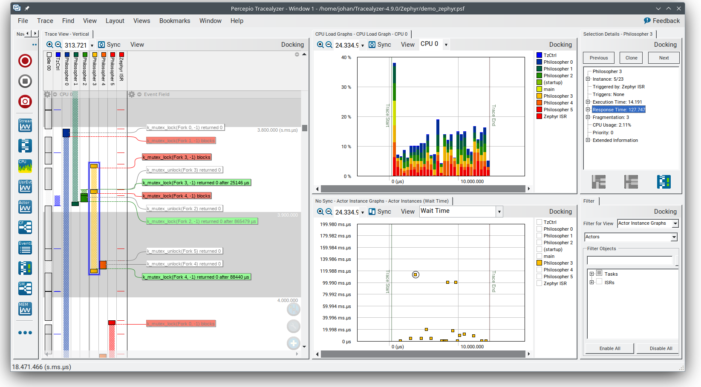
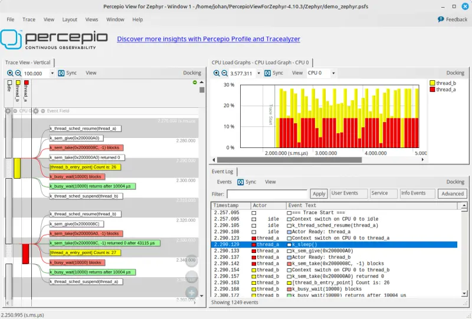
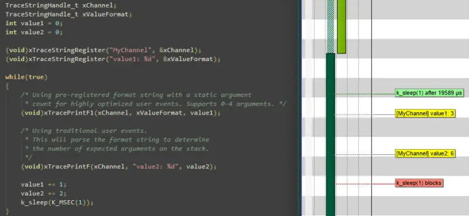
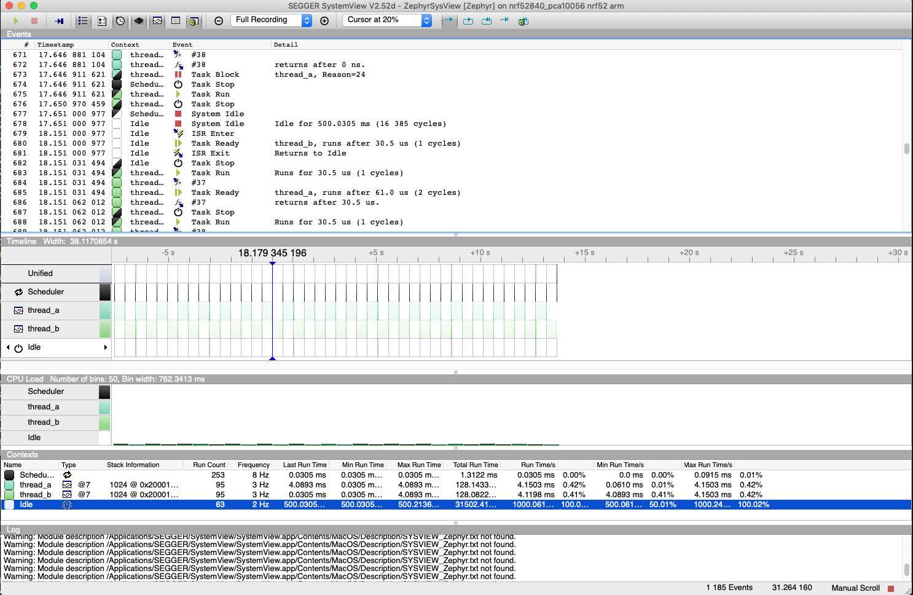

跟踪
概述
跟踪功能提供了一组钩子，让你可以从应用程序中收集数据，并让主机上运行的 跟踪工具 可视化内核及各子系统的内部工作情况。
每个系统都有需要跟踪输出的应用程序特定事件。以往这意味着：
确定应用程序特定的有效载荷，
选择合适的序列化格式，
编写目标端的序列化代码，
确定并编写 I/O 传输机制，
编写 PC 端的反序列化器/解析器，
为过滤和展示编写专门的定制工具。
应用程序可以使用现有格式之一，也可以通过覆盖 include/zephyr/tracing/tracing.h 中声明的宏来定义自定义格式。
Zephyr 支持多种格式、传输方式和主机工具。
实际上，不同系统的 I/O 差别很大。因此，当我们必须确保有效载荷/格式（顶层）与传输机制（底层）之间的接口足够通用和高效、能够对这些 I/O 建模时，对 I/O 类型进行分类很有指导意义。请参阅下文的 I/O 分类 一节。
命名跟踪事件
尽管用户可以扩展任何受支持的序列化格式，以启用更多跟踪函数（或提供自己的后端），Zephyr 也提供了一个通用的命名跟踪函数，一方面是为了方便，另一方面也用来演示如何扩展跟踪框架。
用户可以调用 sys_trace_named_event() 生成自定义跟踪事件，该函数接受一个事件名称以及两个任意的 4 字节参数。如果提供的事件名称对于跟踪后端所支持的序列化格式来说太长，后端可能会将其截断。
序列化格式
通用跟踪格式（CTF）支持
通用跟踪格式（Common Trace Format，CTF）是一种用于描述跟踪格式的开放格式和语言。它使工具可以复用，目前已有文本行形式（babeltrace）和图形化（TraceCompass）的工具。
C 程序员会觉得 CTF 很眼熟，但它增加了更强的类型约束。请参阅 CTF - A Flexible, High-performance Binary Trace Format。
CTF 让我们可以形式化地描述应用程序特定的有效载荷和序列化格式，从而为主机工具和解析器以及过滤和展示工具提供通用的基础设施。
通用接口
在 CTF 中，一个事件被序列化为包含一个或多个字段的数据包。如下文 I/O 分类 一节所示，底层可以：
在事务开始时执行操作（例如锁定互斥量），
以某种方式处理每个字段（例如同步推送发出、拼接、加入与线程绑定的 FIFO），
在事务结束时执行操作（例如释放互斥量、发出拼接缓冲区）。
CTF 顶层示例
CTF_EVENT 宏会把每个参数序列化为一个字段:
/* Example for illustration */
static inline void ctf_top_foo(uint32_t thread_id, ctf_bounded_string_t name)
{
CTF_EVENT(
CTF_LITERAL(uint8_t, 42),
thread_id,
name,
"hello, I was emitted from function: ",
__func__ /* __func__ is standard since C99 */
);
}
如何序列化和发出字段以及如何处理对齐，可以在底层内部于编译时静态完成。
CTF 顶层通过配置选项 CONFIG_TRACING_CTF 启用，可以与不同的传输后端一起以同步和异步模式使用。
跟踪工具
Zephyr 支持多种流行的跟踪工具，下面按字母顺序介绍。
Percepio Tracealyzer 支持
Zephyr 支持 Percepio Tracealyzer，它提供跟踪可视化以简化分析，还提供报告生成和其他分析功能。Tracealyzer 支持通过多种接口进行跟踪流式传输，也支持快照跟踪，即将事件保存在 RAM 缓冲区中。


启用 Tracealyzer 跟踪后，Zephyr 内核事件会被自动捕获。Tracealyzer 还对应用程序日志提供了广泛的支持，你可以在应用程序代码中调用跟踪库。这样就能把内核事件和应用程序事件放在一起可视化，例如以数据曲线或状态图的形式展示记录的变量。更多内容请参阅应用程序随附的 Tracealyzer 用户手册。
Percepio TraceRecorder 与流端口
Tracealyzer 的跟踪库（TraceRecorder）已包含在 Zephyr 清单（manifest）中，并以相同的许可证（Apache 2.0）提供。在 prj.conf 中添加以下配置选项即可启用：
CONFIG_TRACING=y
CONFIG_PERCEPIO_TRACERECORDER=y
或者使用 menuconfig：
启用
在 下选择 Percepio Tracealyzer
配置 TraceRecorder 还需要一些额外的设置。最重要的配置是选择正确的“流端口（stream port）”，它指定如何输出跟踪数据。截至 2024 年 7 月，Zephyr 配置系统中提供以下流端口：
Ring Buffer：跟踪数据保存在 RAM 环形缓冲区中。
RTT：在 J-Link 调试探针上通过 Segger RTT 进行跟踪流式传输。
ITM：在 Arm Cortex-M 设备上通过 ITM 功能进行跟踪流式传输。
Semihost：用于在 QEMU 上跟踪，将跟踪数据流式写入主机文件。
在 menuconfig 中的 下选择流端口。
或者直接在 prj.conf 中添加以下选项之一：
CONFIG_PERCEPIO_TRC_CFG_STREAM_PORT_RINGBUFFER=y
CONFIG_PERCEPIO_TRC_CFG_STREAM_PORT_RTT=y
CONFIG_PERCEPIO_TRC_CFG_STREAM_PORT_ITM=y
CONFIG_PERCEPIO_TRC_CFG_STREAM_PORT_ZEPHYR_SEMIHOST=y
确保只包含这些配置选项中的一个。
各流端口模块有各自的配置选项。在 menuconfig 中，它们位于 下。下面介绍每个流端口最重要的选项。
Tracealyzer 快照跟踪（Ring Buffer）
“Ring Buffer”流端口将跟踪数据保存在设备上的 RAM 缓冲区中。默认情况下这是一个环形缓冲区，即总是包含最新的数据。它用于转储跟踪数据的“快照”，例如通过调试器转储。除非你有数兆字节的空闲 RAM，否则通常只能得到较短的跟踪，因此不适合用于性能剖析。不过，它与断点结合用于调试时非常有用。例如，如果在错误处理程序中设置断点，快照跟踪可以显示导致该错误的事件序列。快照跟踪也很容易上手，因为它不依赖任何特定的调试探针或其他开发工具。
要使用 Ring Buffer 选项，请确保 prj.cnf 中有以下配置选项：
CONFIG_TRACING=y
CONFIG_PERCEPIO_TRACERECORDER=y
CONFIG_PERCEPIO_TRC_START_MODE_START=y
CONFIG_PERCEPIO_TRC_CFG_STREAM_PORT_RINGBUFFER=y
CONFIG_PERCEPIO_TRC_CFG_STREAM_PORT_RINGBUFFER_SIZE=<size in bytes>
或者使用 menuconfig：
启用
在 下选择 Percepio Tracealyzer
在 下选择 Start
在 下选择 Ring Buffer
在 下设置缓冲区大小（以字节为单位）。
如果 RAM 紧张，可以减小默认的缓冲区大小；如果有富余的 RAM 并希望获得更长的跟踪，则可以增大它。也可以优化跟踪配置设置，过滤掉不太重要的事件，以获得更长的跟踪。在 menuconfig 中，请参阅 。
查看跟踪数据最简单的方法是启动调试器（west debug），然后运行以下 GDB 命令:
dump binary value trace.bin *RecorderDataPtr
除非指定了其他路径，生成的文件通常位于构建目录的根目录下。在 Tracealyzer 中选择 打开该文件。
使用 SEGGER RTT 进行 Tracealyzer 流式传输
Tracealyzer 内置对 SEGGER RTT 的支持，可以使用 J-Link 探针接收跟踪数据，从而记录非常长的跟踪。要将 Zephyr 配置为通过 RTT 向 Tracealyzer 流式传输，请在 prj.cnf 中添加以下配置选项：
CONFIG_TRACING=y
CONFIG_PERCEPIO_TRACERECORDER=y
CONFIG_PERCEPIO_TRC_START_MODE_START_FROM_HOST=y
CONFIG_PERCEPIO_TRC_CFG_STREAM_PORT_RTT=y
CONFIG_PERCEPIO_TRC_CFG_STREAM_PORT_RTT_UP_BUFFER_SIZE=<size in bytes>
或者使用 menuconfig：
启用
在 下选择 Percepio Tracealyzer
在 下选择 Start From Host
在 下选择 RTT
在 下设置 RTT “up”缓冲区的大小（以字节为单位）。
RTT buffer size up 设置 RTT 发送缓冲区的大小，这对吞吐量很重要。默认情况下该缓冲区相当大（5000 字节），以便在板载 J-Link 调试器上也能获得不错的性能（板载调试器没有独立探针快）。如果 RAM 紧张，可以考虑减小这一设置。如果使用常规的 J-Link 探针，通常使用小得多的缓冲区（例如 1 KB 或更小）就足够了。
有关 RTT 流式传输的更多内容，请参阅 Tracealyzer 用户手册中的 Creating and Loading Traces -> Percepio TraceRecorder -> Using TraceRecorder v4.6 or later -> Stream ports（或搜索 RTT）。
使用 Arm ITM 进行 Tracealyzer 流式传输
此流端口适用于带有 ITM 单元的 Arm Cortex-M 设备。建议使用支持 10 MHz 或更高 SWO 速率的高速调试探针。要使用此流端口，请应用以下配置选项：
CONFIG_TRACING=y
CONFIG_PERCEPIO_TRACERECORDER=y
CONFIG_PERCEPIO_TRC_START_MODE_START=y
CONFIG_PERCEPIO_TRC_CFG_STREAM_PORT_ITM=y
CONFIG_PERCEPIO_TRC_CFG_STREAM_PORT_ITM_PORT=1
或者使用 menuconfig：
启用
在 下选择 Percepio Tracealyzer
在 下选择 Start
在 下选择 ITM
在 下将 ITM 端口设为 1。
ITM 流端口的主要设置是 ITM 端口（0-31）。Tracealyzer 需要一个专用通道。端口 0 通常保留给 printf 日志，因此默认使用通道 1。
Use internal buffer 选项通常应保持禁用。它会在发送之前把数据缓冲在 RAM 中，并将数据发送推迟到周期运行的 TzCtrl 线程中进行。
主机端的设置取决于所用的调试探针。更多内容请参阅 Tracealyzer 用户手册中的 。
从 QEMU 进行 Tracealyzer 流式传输（Semihost）
此流端口专为在 QEMU 中跟踪 Zephyr 而设计。这是一种入门跟踪的简便方法，无需高速调试探针即可尝试流式跟踪。数据通过半主机（semihosting）流式写入主机文件。要使用此选项，请应用以下配置选项：
CONFIG_SEMIHOST=y
CONFIG_TRACING=y
CONFIG_PERCEPIO_TRACERECORDER=y
CONFIG_PERCEPIO_TRC_START_MODE_START=y
CONFIG_PERCEPIO_TRC_CFG_STREAM_PORT_ZEPHYR_SEMIHOST=y
使用 menuconfig
启用
启用
在 下选择 Percepio Tracealyzer
在 下选择 Start
在 下选择 Semihost
除非指定了其他路径，生成的跟踪文件默认位于构建目录根目录下的 ./trace.psf。在 Percepio Tracealyzer 中选择 打开该文件。
记录器启动模式
你可能已经注意到上面 Tracealyzer 示例中的 Recorder Start Mode 选项。它决定跟踪何时开始。选择 Start 时，跟踪在启动时、TraceRecorder 库初始化完成后立即开始。使用 Ring Buffer 和 Semihost 流端口时推荐这种方式。
通过 RTT 或 ITM 流式传输时，也可以使用 Start From Host 或 Start Await Host。二者都会监听来自 Tracealyzer 应用程序的启动命令。后者 Start Await Host 会使 TraceRecorder 初始化阻塞，直到收到来自 Tracealyzer 应用程序的启动命令。
Tracealyzer 的自定义流端口
流端口是 TraceRecorder 中的小模块，定义了输出跟踪数据时调用哪些函数，以及（可选）如何从 Tracealyzer 读取启动/停止命令。编写自定义流端口来实现自己的数据传输相当容易，Tracealyzer 可以通过多种接口接收跟踪流，包括文件、套接字、COM 端口、命名管道等。注意，TraceRecorder 仓库中还提供了其他流端口模块（例如 lwIP），但可能需要修改才能在 Zephyr 上使用。
了解更多
有关如何入门的更多内容，请参阅 Tracealyzer Getting Started Guides。
Percepio View for Zephyr
Percepio View 是一款基于 Percepio Tracealyzer 的免费跟踪工具，用于调试和验证 Zephyr 应用程序。


Percepio View 可以与传统调试器配合使用，它可视化线程、ISR、系统调用以及你自己的“用户事件（User Events）”的实时执行情况，是对调试器的补充。


要进一步了解 Percepio View、如何入门以及升级选项，请访问 Percepio 的产品页面。
Percepio View 提供快照跟踪，即数据存储在目标 RAM 中的环形缓冲区里，并通过常规调试器连接保存到主机。如需跟踪流式传输支持，Percepio 提供（付费）升级到 Percepio Profile 或 Percepio Tracealyzer。无需修改 Zephyr 源代码，只需在 Kconfig 中启用 TraceRecorder 库。Percepio View 可在 Windows 和 Linux 主机上运行。
SEGGER SystemView 支持
Zephyr 内置对 SEGGER SystemView 的支持，对于具备所需硬件支持的平台，任何应用程序都可以启用它。
SystemView 所用的有效载荷和格式是应用程序定制的，并依赖 RTT 作为传输方式。较新版本的 SystemView 支持其他传输方式，例如 UART 或快照模式（Zephyr 目前都还不支持）。
要启用 SEGGER SystemView 跟踪支持，请在构建命令中加入 SystemView RTT 跟踪代码片段（rtt-tracing）：
west build -b <board> -S rtt-tracing samples/synchronization
SystemView 也可以用于事后（post-mortem）跟踪，可通过 CONFIG_SEGGER_SYSVIEW_POST_MORTEM_MODE 启用。在这种模式下，系统崩溃后可以使用 west attach 连接调试器，然后将内部 RAM 缓冲区中的最新数据加载到 SystemView 中。


较新版本的 SEGGER SystemView 附带了一个 Zephyr 的 API 转换表，但该表不完整，与 Zephyr 当前的支持程度也不一致。要使用最新的 Zephyr API 描述表，请把树中提供的文件复制到本地配置目录，以覆盖内置的表:
# On Linux and MacOS
cp $ZEPHYR_BASE/subsys/tracing/sysview/SYSVIEW_Zephyr.txt ~/.config/SEGGER/
TraceCompass
TraceCompass 是一个开源工具，用于可视化线程调度和中断等 CTF 事件，有助于发现复杂系统中意外的交互和资源冲突。
另请参阅 Ericsson 的演讲 Advanced Trouble-shooting Of Real-time Systems。
Perfetto
Perfetto 是一个用于 Chrome Trace Event Format 的网页版跟踪查看器。它显示的调度和中断活动与 TraceCompass 相同，而且无需安装任何工具：scripts/tracing/ctf2perfetto.py 只需 Python 3 即可把 CTF 跟踪转换为该格式:
$ZEPHYR_BASE/scripts/tracing/ctf2perfetto.py <trace file> -o trace.json
在 https://ui.perfetto.dev 加载 trace.json 后，会得到一条时间线，每个线程一条泳道，另外还有 ISR 以及信号量、互斥量、定时器等内核对象的泳道。
插桩 子系统根据函数调用跟踪写出相同的格式，因此同一次构建可以用两种方式在同一个查看器中查看。
与 babeltrace2 的预期一致，TSDL metadata 从跟踪文件旁边读取，除非 --metadata 指向其他位置。请使用生成该跟踪的那次构建所产生的元数据：CTF 记录不带长度，因此无法跳过元数据中未描述的记录，此时转换器会停止并给出该记录的事件 id，而不是写出不完整的跟踪。
用户自定义跟踪
这种跟踪格式让应用程序可以定义在每个钩子上运行的普通 C 函数，无需编写或派生跟踪头文件。每个 sys_port_trace_* 钩子都被路由到一个名为 sys_trace_<event>_user() 的 __weak 回调；应用程序只需覆盖它关心的回调，未定义的回调都是空操作。
示例包括：
简单地翻转 GPIO，以便用外部示波器跟踪，同时尽量减少额外的 CPU 负载
以其他跟踪系统无法支持的非标准或专有格式生成/输出跟踪数据
这些回调涵盖线程/调度器、ISR、空闲、系统初始化和睡眠事件、GPIO、定时器、RTIO 以及内核对象（信号量、互斥量、条件变量、消息队列、邮箱、事件、轮询、内存块（slab）和工作队列）。权威列表及确切签名见 subsys/tracing/user/tracing_user.h 中的 sys_trace_*_user 声明。下面是一个有代表性的子集：
void sys_trace_thread_create_user(struct k_thread *thread);
void sys_trace_thread_switched_in_user(void);
void sys_trace_thread_switched_out_user(void);
void sys_trace_isr_enter_user(void);
void sys_trace_isr_exit_user(void);
void sys_trace_idle_user(void);
void sys_trace_k_sem_give_enter_user(struct k_sem *sem);
void sys_trace_k_mutex_lock_enter_user(struct k_mutex *mutex, k_timeout_t timeout);
使用 CONFIG_TRACING_USER 选项启用这种格式。tests/subsys/tracing/tracing_user_callbacks 展示了一个覆盖对象回调的应用程序。
树外跟踪格式
下游模块无需修改 Zephyr 树即可提供自己的跟踪格式。将 CONFIG_TRACING_FORMAT_HEADER（一个没有提示的 Kconfig 字符串，在模块的 Kconfig 中通过 default 赋值）设为包含路径上某个头文件的名称；当未选择任何树内格式时，include/zephyr/tracing/tracing.h 会通过计算得到的 #include 引入它。
格式头文件定义它要记录的 sys_port_trace_* 钩子，并以如下内容结尾：
/* default no-ops for the scheduler/idle/init/named function layer */
#include <zephyr/tracing/tracing_default_hooks.h>
/* no-op for every sys_port_trace_* hook this header does not define */
#include <zephyr/tracing/tracing_hooks.h>
因此一种格式只需实现它关心的钩子。跟踪传输方式通过 TRACING_BACKEND_DEFINE() 独立添加（参见 subsys/tracing/include/tracing_backend.h），因此无论自定义格式还是自定义后端都不需要修改核心树。tests/subsys/tracing/tracing_format_module 是一个完整的示例。
传输后端
目前支持以下后端：
UART
USB
文件（在基于 POSIX 架构的目标上使用 native 移植）
RTT（配合 SystemView）
RAM（由调试器取回缓冲区）
使用跟踪
示例 samples/subsys/tracing 演示了使用不同格式和后端进行跟踪。
最简单的入门方法是在 native_sim 移植上使用 CTF 格式，按如下方式构建该示例：
使用 west：
# From the root of the zephyr repository
west build -b native_sim samples/subsys/tracing -- -DCONF_FILE=prj_native_ctf.conf
使用 CMake 和 ninja：
# From the root of the zephyr repository
# Use cmake to configure a Ninja-based buildsystem:
cmake -Bbuild -GNinja -DBOARD=native_sim -DCONF_FILE=prj_native_ctf.conf samples/subsys/tracing
# Now run the build tool on the generated build system:
ninja -Cbuild
然后可以使用 -trace-file 选项运行生成的二进制文件，以生成跟踪数据:
mkdir data
cp $ZEPHYR_BASE/subsys/tracing/ctf/tsdl/metadata data/
./build/zephyr/zephyr.exe -trace-file=data/channel0_0
将 babeltrace 或 TraceCompass 指向包含元数据和跟踪文件的 data 目录，即可可视化生成的 CTF 输出。
使用 RAM 后端
对于没有可用于跟踪的 I/O（例如 USB 或 UART）、但有足够 RAM 来收集跟踪数据的设备，可以通过配置 CONFIG_TRACING_BACKEND_RAM 启用 RAM 后端。调整 CONFIG_RAM_TRACING_BUFFER_SIZE，使其能够记录满足需要的跟踪量。然后借助 gdb 之类的运行时调试器，就可以把该缓冲区从目标取回到主机:
(gdb) dump binary memory data/channel0_0 <ram_tracing_start> <ram_tracing_end>
与其他后端一样，生成的 channel0_0 文件必须与 metadata 文件放在同一目录中。
未来借鉴 LTTng
目前这里提供的顶层相当简单、简陋，而且是从 Zephyr 的 Segger SystemView 调试模块中不必要地复制过来的。
对于像 Zephyr 这样的操作系统，借鉴 Linux 的 LTTng 并把顶层改为序列化成相同格式是合理的。这样就能直接复用 TraceCompass 中针对 Linux 的现成分析。或者，也可以针对 Zephyr 定制 TraceCompass 中的 LTTng 分析。以与目标无关的开源方式让 TraceCompass 能够分析 Zephyr，这项工作正在进行中。
I/O 分类
原子推送/生产/写入/入队：
- 同步：
表示调用返回时数据传输已经完成。
- 异步：
表示调用返回时数据传输仍在等待或进行中。通常使用中断/回调/信号或轮询来判断是否完成。
- 缓冲：
表示多次数据传输被复制并合并成更大的传输。通常用于分摊开销（突发出队）或减轻抖动（平稳出队）。
- 示例：
- 同步、无缓冲
例如通过 GPIO 进行的 PIO，数据流平稳，无需额外的 FIFO 内存。抖动低，但效率可能较低（无法分摊写操作的开销）。
- 同步、有缓冲
例如
fwrite()或加入 FIFO。当缓冲区水位超过阈值时，以阻塞方式突发清空 FIFO。突发造成的抖动可能导致错过截止时间。
- 异步、无缓冲
例如 DMA，或共享内存中的零拷贝。要小心数据冒险、竞态条件等问题！
- 异步、有缓冲
例如加入 FIFO。
原子拉取/消费/读取/出队：
- 同步：
表示调用返回时数据接收已经完成。
- 异步：
表示调用返回时数据接收仍在等待或进行中。通常使用中断/回调/信号或轮询来判断是否完成。
- 缓冲：
表示以比请求大小更大的块复制数据。通常用于分摊等待时间。
- 示例：
- 同步、无缓冲
例如阻塞式读调用、
fread()或 SPI 读取、共享内存中的零拷贝。
- 同步、有缓冲
例如带缓存的阻塞式读调用。如果读取模式具有空间局部性，这样做是合理的。
- 异步、无缓冲
例如共享内存中的零拷贝。要小心数据冒险、竞态条件等问题！
- 异步、有缓冲
例如
aio_read()或 DMA。
遗憾的是，I/O 可能不是原子的，因此可能需要加锁。如果有多个独立的通道可用，则可能不需要加锁。
- 系统的写操作非原子，且只有一个共享通道
例如 UART。需要加锁。
lock(); emit(a); emit(b); emit(c); release();
- 系统的写操作非原子，但有多个通道
例如多路 UART。如果底层把每个 Zephyr 线程+ISR 映射到各自的通道，就可以无锁，因为每个线程自身是顺序一致的，从而缓解了竞争。
emit(a,thread_id); emit(b,thread_id); emit(c,thread_id);
- 系统的写操作是原子的，但只有一个共享通道
例如
native_sim或带 DMA 的开发板。可能需要也可能不需要加锁。
emit(a ## b ## c); /* Concat to buffer */
lock(); emit(a); emit(b); emit(c); release(); /* No extra mem */
- 系统的写操作是原子的，且有多个通道
例如 native_sim 或带多通道 DMA 的开发板。无锁。
emit(a ## b ## c, thread_id);
对象跟踪
内核还可以跟踪系统中的内核对象。启用 CONFIG_TRACING_OBJECT_TRACKING 会启用 对象核心框架，它可以枚举每种内核对象类型的对象。例如，要遍历每个互斥量，可以这样写:
static int visit_mutex(struct k_obj_core *obj_core, void *data)
{
struct k_mutex *mutex = CONTAINER_OF(obj_core, struct k_mutex, obj_core);
/* Do something */
return 0;
}
k_obj_type_walk_locked(k_obj_type_find(K_OBJ_TYPE_MUTEX_ID), visit_mutex, NULL);
每种对象类型都可以通过各自的 CONFIG_OBJ_CORE_* 选项排除。Object cores 示例可以在启用对象跟踪的情况下构建。
API
通用
- subsys_tracing_apis
线程
- subsys_tracing_apis_thread
工作队列
- subsys_tracing_apis_work
轮询
- subsys_tracing_apis_poll
信号量
- subsys_tracing_apis_sem
互斥量
- subsys_tracing_apis_mutex
条件变量
- subsys_tracing_apis_condvar
队列
- subsys_tracing_apis_queue
FIFO
- subsys_tracing_apis_fifo
LIFO
- subsys_tracing_apis_lifo
栈
- subsys_tracing_apis_stack
消息队列
- subsys_tracing_apis_msgq
邮箱
- subsys_tracing_apis_mbox
管道
- subsys_tracing_apis_pipe
堆
- subsys_tracing_apis_heap
内存块（slab）
- subsys_tracing_apis_mslab
定时器
- subsys_tracing_apis_timer
系统调用
- subsys_tracing_apis_syscall
网络跟踪
- subsys_tracing_apis_net
网络套接字跟踪
- subsys_tracing_apis_socket